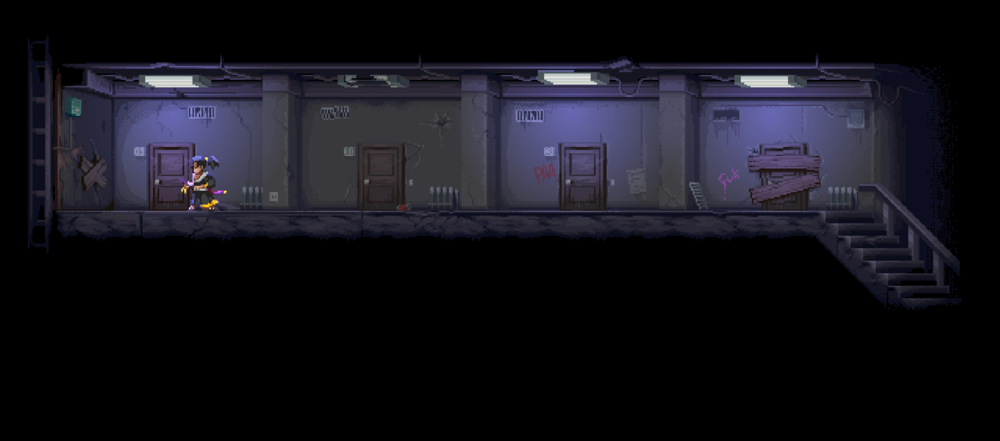
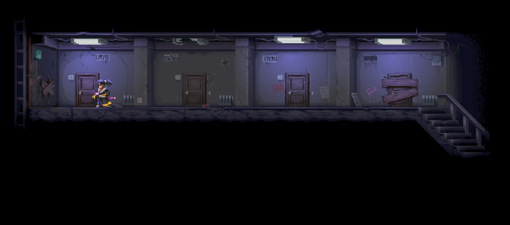
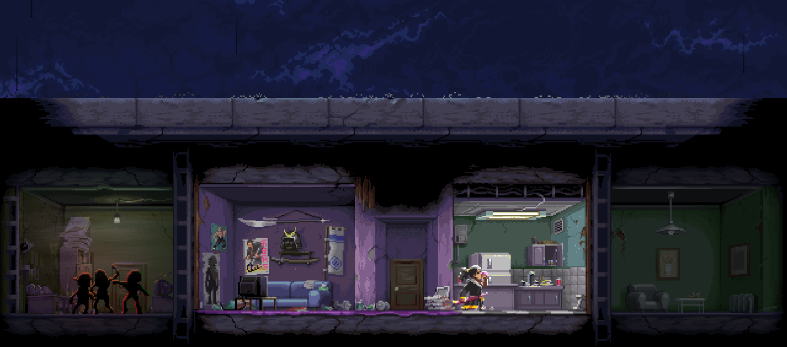
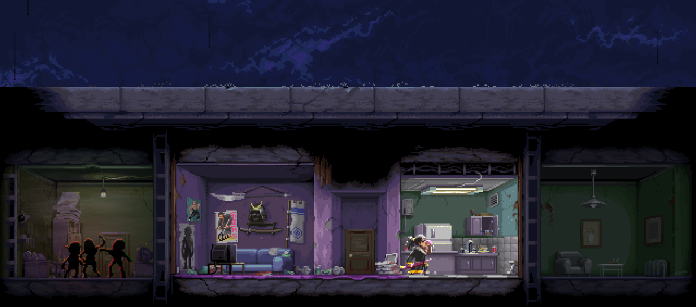

"I've got nothing to lose"
I said to myself
For now, it all seems meaningless
 

 



Years of killing has already made me a puppet, a machine who can only waving his weapon.
Samurai... An identity I used to be utterly proud of. But now, even my Wakizashi ain't glowing no more.
I'm so tired. Lots of people die because of me, and if I live on, there would be doubtlessly more and more.
Thinking of that, I ignore the rifles' loading sound and close my eye. I didn't even pick up my Wakizashi.
Every day a same day. And now I'm gonna be set free from this shithole loop.
*Gasp*
*Gunshot*